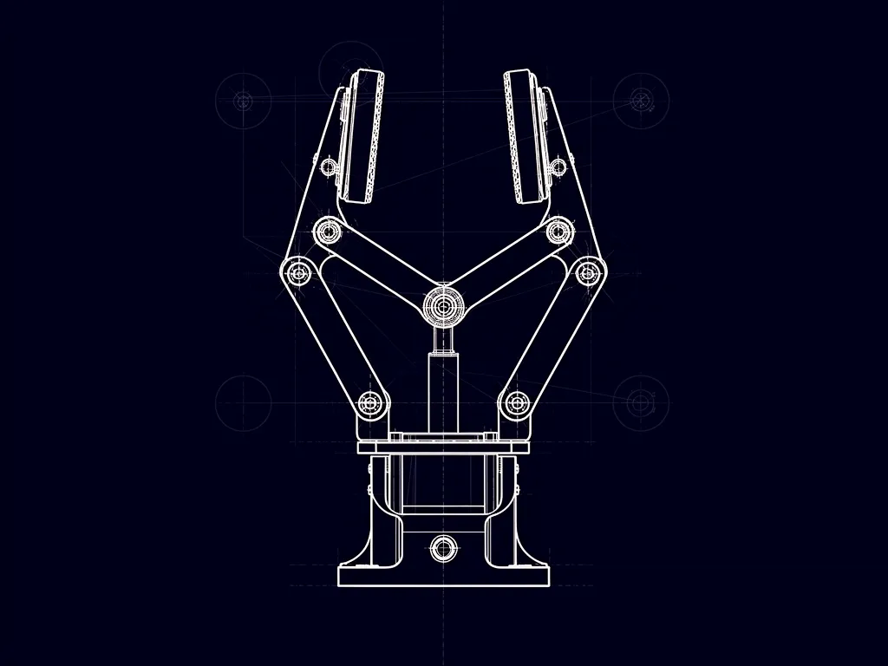
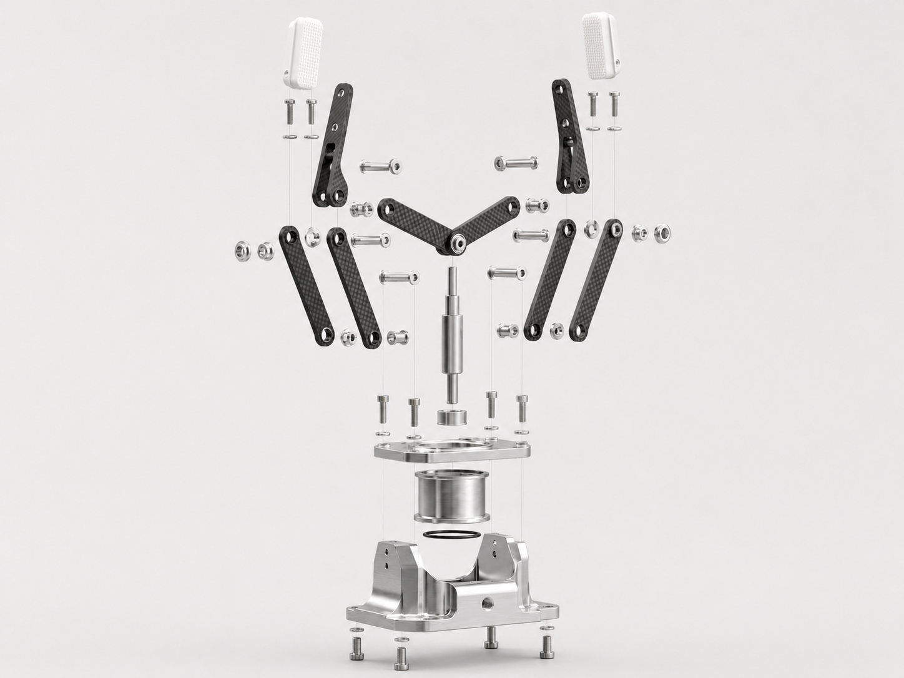

Development & Analysis
From initial concept through CAD modelling, FEA simulation, and physical load testing — the full development pipeline for the modular hybrid gripper.
Phase 1
Design Requirements
The gripper must handle parts ranging from 10–80 mm diameter, sustain a grip force of up to 50 N, and integrate with a standard UR5-compatible flange. Finger profiles are swappable without replacing the actuator body.

Phase 2
CAD Modelling
All components were modelled in SolidWorks 2023. The finger body is parametric — swapping material in the simulation requires only a material-property override, not a new model.



Modular Joint Interface
A keyed bayonet-style interface allows each finger to be locked and released with a 90° twist. The interface surface carries shear load through four radial lugs machined into the finger base.
Actuator Body
The actuator housing remains constant across all three material variants. Finger geometry changes only affect the replaceable finger element, keeping the comparison controlled and the cost of switching low.
Contact Geometry
V-groove contact faces distribute load across a larger area than flat-jaw designs. The angle is set at 120° to centre cylindrical parts passively under grip force.
Phase 3
Material Property Comparison
| Property | Unit | Al 6061-T6 | CFRP (UD) | PA12 Nylon (SLS) |
|---|---|---|---|---|
| Density | g/cm³ | 2.70 | 1.55 | 1.01 |
| Tensile Strength | MPa | 310 | 600+ | 48 |
| Yield Strength | MPa | 276 | — | 43 |
| Young's Modulus | GPa | 69 | 70–105 | 1.6 |
| Thermal Expansion | µm/m·°C | 23.6 | 0–2 | ~100 |
| Machinability | — | Excellent | Difficult | SLS only |
| Relative Cost | — | Low | High | Medium |
Phase 4
Finite Element Analysis
Static structural FEA was run in SolidWorks Simulation. Boundary conditions were identical for all three material variants to isolate the effect of material properties.
— Al 6061-T6
Boundary Conditions
The finger base (bayonet interface) was fixed. A 50 N distributed load was applied across the V-groove contact faces at the fingertip. A secondary 15 N side-load was applied orthogonal to the grip axis to simulate workpiece slip.
Phase 5
Physical Load Testing
Prototypes in Al 6061-T6 and SLS PA12 were manufactured for destructive and non-destructive load testing. CFRP prototyping was cost-prohibitive at this scale; simulation results are used for that variant.
A calibrated load cell measured actual grip force at the contact face while a dial gauge recorded displacement at the fingertip. Tests were conducted at 10 N increments from 0 to 60 N.
Setup Photo
Phase 6
Discussion & Recommendation
CFRP — Best Structural Performance
Carbon fibre delivers the highest factor of safety and lowest displacement under load. Its low density reduces tool-change inertia. The trade-off is material and fabrication cost, plus anisotropic behaviour that requires careful fibre orientation control.
Al 6061-T6 — Best All-Round Value
Aluminium meets all structural requirements with a comfortable safety margin and is easily CNC-machined in-house. For production quantities above ~20 units, it is the most economically rational choice.
PA12 Nylon — Best for Rapid Iteration
SLS nylon enables geometry changes overnight without tooling cost, making it ideal for early-stage prototyping. It does not meet the structural requirements for sustained 50 N operation and should not be used in production.